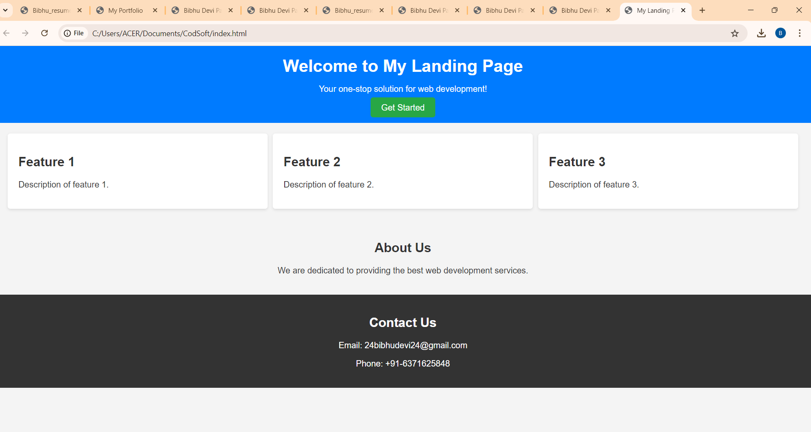

Projects
THE SMART PUBLIC LIGHTING SYSTEM
It makes streets safer and saves energy and money. Efficient function of light with timely activation and deactivation through automation. As the lights are automated the manual work is zero. If any problem is detected an individual can directly connect to the respective department directly through QR provided in the poles. Motion detectors are connected if no motion then automatically reduce its power consumption by switching off the lights and switching on the lights when motion is detected.

LANDING PAGE
A landing page is an ideal web development project for beginners. It requires basic knowledge of HTML and CSS. Through this project, you'll learn to create columns, divide sections, arrange items, and add headers and footers. The most important aspect is unleashing your creativity to design an impressive page. Pay attention to alignments, padding, color palette, boxes, and other elements. Be mindful of CSS to avoid overlapping elements. In short, a landing page project allows you to apply HTML and CSS skills, encouraging your creativity while ensuring a visually appealing and user-friendly design.
